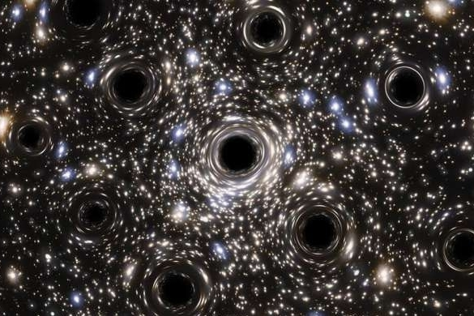
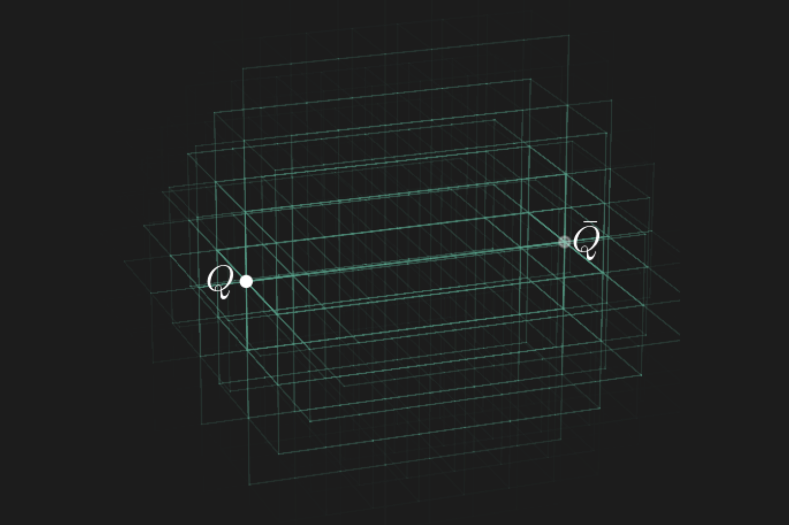

Research interests
Publications: Inspire
The early universe
I am broadly interested in the theoretical physics of the early universe, and hope to explore many aspects of it during my PhD.

Primordial black holes
Primordial black holes are black holes that might have formed soon after the Big Bang, and which might explain the dark matter in or universe.

Undergraduate research
As an undergraduate, I worked on research projects in computational astrophysics and lattice QCD.